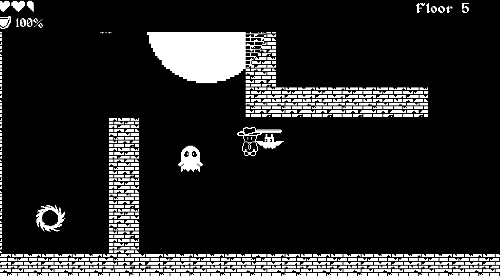
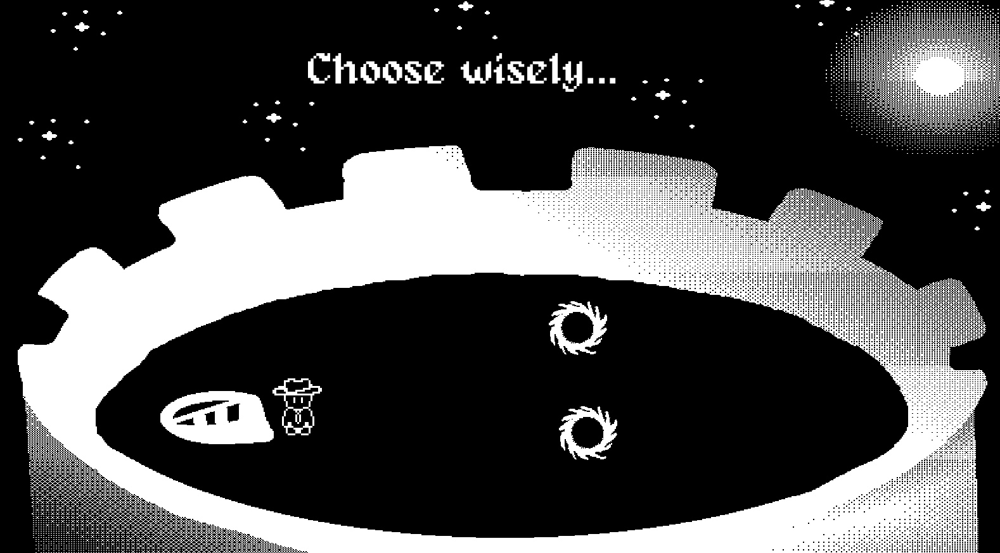

Twilight Tower
Twilight Tower is a 2D platformer built in Godot that has one rule: you can only attack while standing in the light. Players climb a tower surrounded by darkness and have to read the environment, plan their route, and decide the right time to fight. This was built for 1-bit Game Jam on itch.io.

The problem
We wanted a combat system that made players think, not just react. In most platformers you can attack anywhere, so the levels are mainly obstacles. We asked: what if the level itself decided when you could fight?
The main challenge was that it was me and my partner's first time using Godot and their scripting language. It was also the first time I created art assets in pixel art. We were also constrained by time because we were both swamped with school work.
The process
-
[Screenshot: research / planning]
[Caption: what this screenshot shows.] Step 01Planning
When planning, our biggest challenge was making each level feel different. With one core rule (you can only attack in light), we worried the levels would start to feel repetitive, and we struggled to decide what else players should run into along the way.
To solve this, we focused on giving each enemy its own behavior so players would need a different strategy for each one. Bats pressure players to keep moving, ghosts add risk by sending players back to earlier levels, and spiders interrupt the player's flow with webs. Mixing these enemies with different light placements let us create new challenges in every level without adding new rules.
Since there were only two of us, we also had to plan carefully around our time. I focused on player animations and environment assets first while my partner started programming moving and attack enemies. Once I finished my task, I helped with the state machines and attaching the art to the game.
-

[Inside a level of the tower.] Designing levels around light
Because light controls combat, every level became a puzzle about where light is placed. I used light to guide players along the path, create safe zones to catch their breath, and set up encounters where players have to lure enemies into the light before they can fight back.
There are three types of enemies: bats, ghosts and spiders. Bats chase and attack players once they come within range. Ghosts chase players down and capture them, dragging them into black holes that teleport them back to a random earlier level. Spiders shoot web projectiles that trap players until they mash the spacebar to break free.
Figuring out how to invert the colors of the sprites when they stepped into the light also stumped us for quite some time. Instead of creating inverted versions of every sprite, we solved it with a custom shader on each light. The shader reads the part of the screen behind the light and flips every color, so any character, enemy or background that enters the light is inverted automatically. Each light also uses a collision area that tells the player when they can attack, which ties the visual effect directly to the core mechanic.
-

[The last level of the Twilight Tower.] Final Steps
We didn't have much time to playtest and refine the game before the deadline. However, we still built everything we set out to create at the start.
All of the audio and sound effects were made with our own voices, which we recorded and then edited in GarageBand by adjusting the pitch and other effects.
The result
We were our own toughest critics, but we also had a lot of fun playing our own game. Looking back, we were amazed by how much we accomplished in such a short time. We knew it wasn't the best game in the world, and we half expected to be the only ones who enjoyed it. To our surprise, we got several comments from players saying they had fun too!
We created a 2D platformer game with 8 floors, 3 different types of enemies, animations, music and sfx in less than 6 weeks with a new scripting language and a new engine.
What I learned
This project was so much fun because I got to make it with one of my closest friends. He had never made a game before, but working with someone you have great chemistry with makes everything a lot easier. We had a blast brainstorming ideas, experimenting with audio, and simply creating something together. It taught me to be less hard on myself and to just dive in. On future projects, I want to leave more time for polish and add more "juice" to bring the game even more to life.